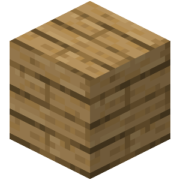
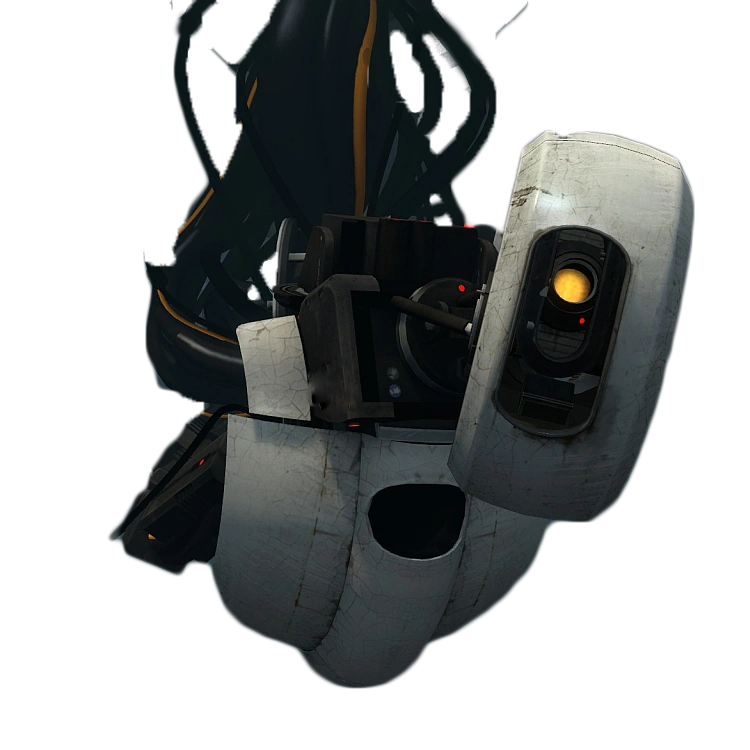

No media selected. Click on an icon below to see one.
music
games
animanga
I'm sorry Isaac.
Another piece of music I was lucky to find out about through spotify autoplay. The Album has one
of the best vocals I've ever heard, and an outstanding choice of instruments.
You know the album is peak when only one realationship was able to cause so many emotions that they were
enough for a full tracklist.(Twin Fantasy) Isaac Wood sings about the pain he felt being treated like an ant
from up there.
This is belongs among te other music that helps me cope with the fact that
Wilbur Soot was never who we saw in him through our love.
Songs
Intro:
Instrumental. Cool instruments, a nice quick start to the journey.
Chaos Space Marine:
The start hits hard. One of the best examples of how good the instruments are.
I love his shaky voice, there's so much emotion inside it.
Probably the happies song on here,
"So I'm leaving this body, and I'm never coming home again, yeah"
gives an uplifting feeling of freedom.
He sings about his coping mechainsm, which is having a Warhammer 40k
hyperfixation. It's nice too see references I'm not too young to get.
Concorde:
Named after the plane, this track introduces the allegory that gave the album its title.
Isaac would climb up mountains, just see her light for a tiny milisecond, while all he would be from up there,
is an ant. This perfectly paints a picture of what the relation ship is like.
"Die free this time" means that to be free would be to out of the relationship.
Bread Song:
Saddest song on the album. I don't have the entire genius interpretation memorized, but just by listening
again, I'm getting the feeling, that the song is about noticing the breadcrumbs, the scars her behaviour
is bleeding from.
Good Will Hunting:
This song sounds like the self-awareness he feels about his one-sided unending love. He wishes
it wouldn't be one sided, he wouldn't be the dependent one, instead they could rely on one
another. Could, oh well.
Haldern:
I cannot unhear that the beginning is referencing Minecraft, and he is digging holes to surivive
the night, he finds escapes that are only temporary.
He longs for her. She came into her life nad made everythig worth going through, so he's doing anything
to "stop your body leaving".
Mark's theme:
Instrumental tribute song for the late uncle of the saxophonist.
The Place Where He Inserted The Blade
The song that made me fall in love with this band. The slow buildup alongside Isaac's shaky,
emotional voice eminating such pain is just so fucking good. You son't need to understand the lyrics
to know how helpless he feels.
"It takes a few years, but they break bones" the constant pain lingering for long does things to you.
Isaac can't move on. Love, but even something simple as lunch he can't make without
thinking about her. He's inside a dream where everything is okay. "Good morning" but he gets woken up.
I like the biblical interpretation of the title. Like Thomas, Isaac needs see proof the be able to believe.
He wants to believe. He wants to see his belief not being just a false dream.
"You're not really sleeping." Only Isaac is inside that blissful slumber.
Isaac would do anything for her, but there's nothing he can do to save the relationship.
"Good hunter's guide to a bad night" BLOODBORNE MENTIONED??!??44?,?
Snow Globes:
I can't really make sense of the Henry the 8th metaphors, but song feels like looking back at somebody else,
at seeing that your situations aren't so different, and you are repeating their same mistakes. Because some
things are factual. Snow globes don't shake on their own. Henry knows, Isaac knows. But Isaac still has
a chance to shake it, to help himself, instead of waiting for things to set themselves into motion alone.
Basketball Shoes:
The closing track, which does it's job, while also being as unforgettable as TPWHITB.
The first part shows him slowly but surely, being able to adjust and move on. He's feeling kinda
normal, things don't hurt that much now.
In the second part he's careless and happy again. It's nice to see the variety of emotion he can put into
his voice. The guitars support the sudden change in mood.
The common interpretation for the third part is the wet dream he has of Charli xcx. But I like to interpret
it the other way. This part is addressed to us, the audience. Charlie symbolizes the giant amount of people
he never thought his songs would reach, and our "generous loan" doesn't help him gett better. His sheets getting wet
could indicate an emotion of fear.
Isaac left the band shortly before the album's release. I really hope he's doing better.
[2025/08/04]
The long awaited csh album. Ever since the first single, "Gethsemane"
was dropped in early march, I could not wait until its release in early may.
They did not disappoint. They released one of their best albums of all time.
The album is a rock opera, each song has its own story, which fits into the narrative
that encompasses the entire tracklist. Biblical themes, allegories appear often, while queer topics
appear just as often. Many different characters appear, who all go to an university
called Parnassus, hence the name "The Scholars". My favorite's are Perimones, Rosa and the Accuser.
Songs
CCF (I'm Gonna Stay With You):
Awesome intro, perfect for the opening track. I like Beolco, goat anthros are always cool.
It was cool to learn what CCF means. It is nowhere near my top tracks form here, but that doesn't
mean it isn't honorably good.
Deveraux:
Their favorite <3. The song's protagonist, Deveraux struggles to exist as a gay man while living
in a conservative family. I can find him relatable. "they're turning animals to men" is one my
favorite lines, for it encaptures the murder of free and imaginitive human spirit by
capitalist society so beautifully. Also it can be interpreted as a play on sentences
commonly used in right-wing propaganda against furries and trans people, where they talk about
how leftist will turn your children into a homosexual or etc.
Lady Gay Approximately:
Malory is a nice transgender allegory. The song is about him coming home expecting not
to be loved and accepted by his mom, but he experiences a happy disappointment.
"Am I dead? No you're my son." Just like Elon Musk did, many unaccepting parents see their trans kids
as dead. Malory too I can find relatable, because I too am trans.
The Catastrophe (Good Luck With That Man):
Upbeat song about the fictional band's experiences touring the world. This would be to place
to bring up Artemis. He's the pink fox you can see on many of the official art. I don't know
enough about the lore to say more here, but the upbeat and happiness of this song nicely contrast
the upcoming track, "Reality".
Equals:
Perimones' song. He does something bad, and gets cancelled for it. He calls Beolco, for nobody
is willing to listen anymore. In the past, I have been both in a position that's similar
to both of theirs. The helplessness Perimones exprsses is beautiful. I can find his dialogue
relatable, but only after heavily misenterpreting it.
"What was the point of these hands, if they could give nothing but pain?" is a cool line regardless.
Gethsemane:
The garden where they arrested Jesus. The song is very long, and I'm not even exactly sure what
it means. The song has multiple parts, which we transition through. Rosa and her "lizard-brain"
both appear. ROSA!!! Mouse anthros are also very cool, which kinda serves as a bias. She can heal
others by absorbing their pain, but she also absorbs their nightmares. I love this song as much
as I love all the other long, multi-part songs CSH wrote. Even though it's hard to make sense of it,
the entire 11 minutes are still a journey. Tabernacle.
Reality:
Fucking awesome. The song is about Chanticleer's supposed death, and Artemis grieving him,
and it is told beautifully.
Starts slow, but grows louder just like the fox' emotions do. Amazing solo. Goldmine of awesome lines.
"And I play back the tapes as often as I can, but we weren't meant to have memories this long."
(As the tapes "degrade into snowflakes" due to him playing them back over and over)
"You said you'd take me away on a starhsip, but baby why'd you have to wait so long?"
THE EARTH FELL OUT FROM UNDER ME
Planet Desperation:
My favorite song from CSH. I firmly believe the average song length of othet bands should be over 8
minutes aswell. The song is from Hyacinth, the dean's perspecitve, as he slowly accepts his impending
death, because Clown College raided Parnassus and poisoned him. We follow him along multiple thought
processes, as we transition through the parts of the song. The mood swings everywhere. I could talk
endlessly about how much I love this.
True/False lover:
The track is also among the favs, it is about the characters discovering theat Chanticleer is actually
alive, and celebrating. I also love little voice recordings slippeed onto the end.
Someone on reddit said this sounds like beating minecraft for the first time. I get where
he's coming from. If you are listening to the album in order from the beginning, then this track offers
a satisfactory, happy ending. Like everythig will be okay in the end. They will be.
[2025/07/03]
I have been playing this game since 2016, meaning even after almost a decade, I still don't get
bored. This fact alone shows how amazing the game is.
I don't have to tell you how significant Minecraft is, if you're here and you haven't heard about it
yet, then you are lying. A shrine is not enough to give it the tribute it deserves.
What you do in Minecraft is entirely up to you. It is diverse. Survival mode is just one of the many
different areas you can discover. The list doesn't end at pvp, building, redstone, parkour.
It never ends.
building

My favorite. I decicated a whole subpage to it. I love experimenting with the new blocks
that are constantly being added. With WorldEdit, my imagination truly is the only limit.
Designing in creative and placing each block by hand in survival are different, but both
amazing experiences. The limitations force you to get creative(not the gamemode), you need
to find the block with right shape and color. Which is why vertical slabs should never be added.
Bdubs, and lots of other hermits are very inspiring to me.
redstone
I'm only partially invested in redstone. I don't know any of the more complicated stuff. I only like
designing doors and elevators for my builds.
Redstone is like electrical wires in real life. They can do nothing more than be powered or not be powered.
But when combined together, things like computers come into exisctence. "mattbattwings" is the legend
of redstone computers.
survival
Mining that first tree, exploring that first cave, digging that hole to trap cattle, planting that first seed,
building that first house is always refreshing. Even tough this starting phase doesnt last long compared to
the time you will spend on mega projects after you obtain the Elytra and shulker boxes. Philza and Hermitcraft
both show that people don't need creative mode to build things made up of tens of thousands of blocks.
Their dedication is enough. I can never stay with one world for too long, on Uncheated SMP S2 was most time I
gave to survival builds. I built the tree with iron tools, and the bridge ruins before going to the end.
I see so many people playing the game in a way that just disgusts me. Building the 23rd farm from a tutorial to
get a lot of items only to use them to build other farms(and they don't understand how they work), never actually
building anything beautiful. Just villager slave chambers, going completely against the will of the devs
who want you to be kind to the world around you. I like how they made slimeballs more easily obtainable,
I hope they will continue make the player less froced to build factories violating human rights. Altough
it will forever remain unavoidable for projects at the scale they have on Hermitcraft.
command blocks
It is an outdated topic in the age of datapacks, but I used to spend so much time making adventure maps, never
finishing a single one. I need to rewatch Csabusa's videos someday.
mods
You should definetly try mods if you haven't done so yet. They enhance the experience greatly. They are
the main reason for the game reamianing entertaining even after this long, for they give a fresh experience
of learning how things work. I recommend: Create, Biomes O' Plenty, Alex's mobs, Ice & Fire Dragons
nostalgia
I grew up on this game. Hungarian youtubers(DoggyAndi, ZsDav, IceBlueBird, JamesMC) and their old videos
will always have a special place in my heart. I want to load up 1.8 someday and try to relive my first time playing.
dsmp
The Dream SMP is the best (and worst) thing to have happened on the internet. You had to be there.
If you were, you know exactly what I am talking about. We got the most thrilling twist and heartbreaking
plotlines in the most random format. Minecraft Improvised Roleplay. All the fanart, all the fanfiction helped
make the silly gameplay become something worth missing other events for. (I was watching L'manberg blow up on
2021/01/06.)
The creators only laid the foundation of what the fandom built on.
Passerine was the main inspiration behind Blackbird. Moranth was inspired by c!Technoblade. Snowchester inspired Tahora,
L'manberg inspired the political lore in an abandoned project. The unique character design headcanons that
were born also inspired me, but I haven't even started that project yet.
Technoblade never dies.
[2025/07/19]

The first part of the series is already a classic. I always find it wonderful, how amazing games
(Half-Life) Valve was able to makeback then, despite the hardware limitations. Even tough 2011 wasn't that long ago, and
Direct3D 9 isn't caveman technology, I can feel the same about Portal 2 a tiny bit. The game ran
flawlessly even on a prehistoric PC like mine. It's rare too see modern games, (especially
those developed in UE5) that don't run terribly in exchange for their high-tech hardware
accelerated rendering. But most likely, after some time passes, it will be UE5 games who will be
mourned through nostalgia.
The sequel offers great puzzles, that were all fun to solve. Many new elements appear, which all combine
together to force you to think hard, and arrive at the euphoric and satisfactory solution.
Realizing that you have to transport the gel bubbles using the excursion funnel was truly a unique experience.
It was also cool to learn more about the lore, by exploring deepest depths of apeture science.
My favorite thing of all about this game is the dialouge. Much like freeman, Chell also stays silent.
And the characters never address her by her name, just "you". This improves the immersion, as it
feels like the npcs are talking directly to you. I found what they are saying funny and entertaining.
GlaDOS roasting you will never get old. Her autotuned voice is iconic and wonderful. Wheatley is British.
Cave Johnson shares a VA with Omni-Man from Invincble, and he did an amazing perfromance as both roles.
I sadly couldn't yet, but I am planning to 100% both games when I can.
You should definetly play them.
[2025/07/03]
My favorite videogame of all time.
I heard about ULTRAKILL first when I was talking about videogame OSTs with a friend. He recommended
me this game's soundtrack, and I immediately fell in love. After I perfected the demo, ULTRAKILL
became the first thing I used my credit card for, since I became old enough to have one near this time
too. At first it was just this cool shooter with cool robots and a biblical plotline. I had no idea,
how much more it would become. Pretty soon, the beautiful nihilstic journey through Dante's
Inferno unfolded before me.
I love this game enough to write an essay about each level.
At the time of writing, I just P-ranked P-1, and I am continuing on to P-rank all the
other sanctums, after P-ranking the main campaign on brutal difficulty.
PRELUDE
OVERTURE: THE MOUTH OF HELL
The prelude is unique to me, because I spent so much time in demo, waiting to be able to play
the full game. It used to be the ugliest layer, but the visual revamp improved its look a lot.
The soundtrack is cool, but it gets overshadowed by how much better it gets later on. I know an
amen break when I hear one.
0-1: INTO THE FIRE
MANKIND IS DEAD.
BLOOD IS FUEL.
HELL IS FULL.
This intro will never get old. The level nicely introduces the player to the most basic mechanics,
and despite having only two(plus the boss) enemies, each room feels unique.
Filth are nothing on standard difficulty, but on brutal, they become a much bigger threat.
They can still be just chainsawed through, if you pay attention to hard damage. Their design
is just as simple as the enemy is, a legs and a mouth, so it fits.
Strays are the other enemy to appear on this level, to introduce the player to projectiles.
They quickly become just a weak turret, although the speed of their bullets is insane on brutal,
making it harder to parry, making them stronger.
Malicous Face, or as we like to call him: Maurice, is the first boss the player encounters.
They are scary at first, especially their yellow attack. But they can actually be one-shotted.
I discovered it by myself. Part of what makes this game good is how you make your own strategies.
If you look back the old ULTRAKILL devlogs, then you can
see how much the design has affected them. They remain a floating orb that shoots
projectiles at you, but
the design makes it feel like more.
The first weapon is found on this level, the Revolver. Your only reason to use it is because you
haven't got the alternate Revolver yet.
The Piercer(blue)'s is how a basic weapon should be,
weak but relatively fast damage, and a stronger but much slower alt-fire.
The Marksman(green) is the
most unique and iconic weapon in ULTRAKILL. By itself it can't do much other than sniping enemies
that move around a lot or are hiding somewhere. But it can be combined with other weapons to pull
of complex techniques. Said manuevers are too hard for me to pull off tough.
The Sharpshooter(red) is one of my favorites. If lined up correctly, it can deal insane damage,
enough to one shot some big enemies. I'm not exactly sure how it works, and why shooting it at an
enemy that is shooting at you makes a huge explosion like that, but it seems to do more than just
launch bullets that ricochet.
0-2: THE MEATGRINDER
The level is short if you go linearly, but there are many secret side ares, like the entrance to 0-S,
and a secret bossfight.
This is the level where Swordsmachine appears. I can't put into words, how cool it is to see another entity
going through the level parallel to you. I love their design a lot. It's asymmetrical, because they
built themselves from scraps. They are easy to kill, since all their attack are parryable, and they can't
move vertically. But it's still fun to fight them. One of my favorite enemies.
0-3: DOUBLE DOWN
The first room got a lot prettier with the visual revamp. The update generally
made all the levels on this layer look better by adding new lighting, it's most noticable here.
Also they made it more circular, which looks good, even though Hakita had stated how time consuming it
is to build round walls. They may have found a better to do it, since they appear more often since the revamp.
The new enemy on this level is the Schism. Its the only song I actually listen to from TOOL, but it's
still nice to see the reference. I like their malformed design, but I play with PSX graphics so i cant really
see all the details. They really aren't more than stronger Strays.
The Shotgun is the second weapon to be found. Being able to parry your own bullets and make them explosive
was an accidental mechanic, but it's what makes ULTRAKILL's shotgun so amazing. It makes it useful both
for close range, and encounters where enemies are grouped close together.
The Core Eject(blue) does what it's named after, and is great when you need a quick boom. You can also do tech
with it: If you shoot the ejected core with the Malicous, then the explosions combine and make an even bigger
one, which essential for the Flesh Prison bossfight.
The Pump Charge(green) also appears in my hand often. It can deliver an instant, high damage shot,
but the explosion also damages you. I think you're meant to decide how much of your health you are willing
to sacrifice for higher damage, but I just pump it to max everytime, since the blood of the enemies
I kill with it will heal me back.
I definetly agree with the people who say that the Sawed-On(red) is overpowered. It can instantly kill
close range enemies, like Filth. Easy way to heal quickly, but if you use it too much then hard damage
will build up, and do the opposite. The hard damage buildup helps balance it a little. I still love this
weapon, launching the chainsaw at the enemy and parrying it back as many times as i can is my number one
method of quickly dealing large damage. I love Chainsaw-man, so I naturally find it cool to chainsaw through
hellspawn.
0-4: ONE MACHINE ARMY
The best level on this layer. I love the linearity of layout of the rooms, it feels so good
to slide through it for the challenge. The cooling chambers are a nice addition, they remind us
about the lore, that we are approaching the core of earth, on a path dug out by humans(perhaps).
0-5: CERBERUS
Boss level. The intro builds up tension before entering the arena.
Cerberus is the same as Maurice. They are tough the first time, but when you come back
after fighting them as regular enemies, they are nothing. It is worth crediting though, that the small
size of the arena makes them harder to defeat, than when you would see them in an open area. I don't
really like their design, but I guess they were never meant to be more than just boring old stone statues.
All the update did was give them abs.
0-S: SOMETHING WICKED
Absolute horror. This secret level is genuinely terrifying.
After wandering through the maze, fearing the sound of Something Wicked, I managed to complete it.
I never wanted to do it again, not because it sucked, but because I'm scared.
ACT I: INFINITE HYPERDEATH
LAYER 1: LIMBO
I was surprised, when the doors opened before me, and I saw a meadow and a bright sky. This kind of
hell portrayal was new to me at the time. Now I belive this to be superior over the boring flames and brimstone,
for there so many things more painful than fire. I think this is where the revamp did best job, it is much more
clearer, what is supposed to go on here. I couldn't recognize the walls as screens simulating the place sinners
could be, but aren't, and so tortuting them. But now I can.
1-1: HEART OF THE SUNRISE
I talked about the surprise behind the level door in an earlier paragraph. The level nicely loops around,
forcing the player to let the athmosphere in.
I don't hate an enemy more than the Drones. They are small, and move around unexpectedly, making them really
hard to hit. They also launch at you and explode, complicating healing from them. But perhaps they were meant
to be annoying. Also, the enemy roster definetly needs support units like them, instead of just the 100th iteration
of the new highest priority target.
The third weapon is the Nailgun. It is the weapon with the most consistent dps, and is great against
bosses, or other enemies with large health. The game improvises you to use it against them, since it is
placed before a Maurice.
The Attractor(blue) can be effective if used correctly, but it's only useful really after
obtaining the alternate Nailgun.
The Overheat(green) is the variant that is the best and raising the dps. The best at the purpose of the
Nailgun.
The Jumpstart(red) is also good, perhaps even better at the thing the Overheat is supposed to be best
at, but it's a bit harder to pull of that extra damage at the end. It can also speed up trains, which is
just a fun feature that makes it less forgettable.
1-2: THE BURNING WORLD
Much like 0-2, this level also feels alive. Like you're not the only entity active.
This communicates when you return to the first room to find it in flames that you didn't start.
I don't really like the first main room that much, since the enemies are in unreachable positions,
and shooting them down from afar is difficult for someone with an aim like mine.
Streetcleaners are the first complexly designed enemy, both visually and mechanically. Unlike any enemy
before, they don't just stand there and take your bullets, they dodge them. Their attacks are unparriable.
They force you to come up with a different strategy, since explosions and parrying don't work against them,
contrary to the other enemies up to this point. Wonderfully great enemy design is also something this
game has, and this the first time it is shown off.
I also like their visual design. You can see that they are cleaners, but they also look like cool
flamethrower-wielding robo-soliders. Machines all look cool in this game, except for the drone.
1-3: HALLS OF SACRED REMAINS
I don't have good relationship with this level, for it was the one I struggled most to P-rank.
The level is much longer than any before, it works as a test of your strength before the bossfight.
If you want to P-rank, then you need to go through both routes. I like to start with red, since it's
harder in my opinion. I keep falling into lava in any level that has lava.
The Hideous Mass is the first challenging boss. Their attacks are big and strong, but luckily they can't move.
You can also obliterate it with the soap. The fact that they only appear again in some of the hardest levels
speaks for their strength. I find them ugly, but they should be since they're an abomination of hell mass overflow.
1-4: CLAIR DE LUNE
The piano piece, "Clair de Lune" has a special place in my heart because of Danganronpa V3.
Time progresses with each level, and we finally reach nighttime, which is beautiful.
After placing the first skull in its place, a red surprise slides
through the hall. It has the same effect Swordsmachine has in 0-2.
V2. I fucking love her. She's like V1's evil twin.
Sandwich's vocaloid cover
portrays perfectly
how I like to think about them: Two completely identical machines, only different in name and color.
They hate each other deeply, and desperately believe that they are better than the other, because they
were both programmed to have a god complex, because they are the same .
The generally accepted interpretation is that you are fighting a "better" version of yourself.
My personal theory is: V1 has wings, it resembles an angel. He was made by God. God regrets making him,
so He creates V2 to stop V1. I'd probably get made fun of on the lore discussion channel on discord, like
I got the first and last time I tried to share my theories.
But I'd be happy if she was just a bot who enjoyed dueling with you.
Her theme fucking slaps. Easily among my favorites. Probably the most iconic riff.
The alternate Revolver can be unlocked here. The fire rate decrease is worth the damage increase.
Only the Marksman's normal version stays useful.
After the beating V2, you get his arm, the Knuckleblaster. I personally only use it to break Guttermen's shield, but it can be used for more with a different playstyle.
1-S: THE WITLESS
I love The Witness and it was great to see that Hakita loves it aswell. Just a fun surprise,
one of my favorite games appearing in my other favorite game.
LAYER 2: LUST
The journey through inferno nicely continues with yet another place without flames. After this point
I did realize how much better this type of portrayal is. I like the colors, i like how purple everything is.
Perhaps the bisexual lighting was intentional, we are on Lust afterall.
2-1: BRIDGEBURNER
The update improved the layout of this level very well, the cranes were an amazing addition.
Much like on layer 4, you can also see the city below, where the next level will be. The final boss is
also foreshadowed at the end. This makes the levels feel connected, and worthy of the praise their designs get.
2-2: DEATH AT 20,000 VOLTS
The storytelling starts to show in this level. You navigate through the electrical systems Minos used
to power the city he protected from the winds, because he felt that they didn't deserve this punishment.
The challenge for this level is to speedrun it, which was fun to do. The doors on this level open after
destroying the power-thingies, you can skip killing the enemies, if you can dodge all their attacks.
The new enemy here is the Soldier. They are augmented versions of the Strays, by machine parts.
It's cool how the inhabitants of hell adapted to mechanical intruders.
From my experience, they just feel like bigger drones.
There's a weapon to be found on this level, the Railcannon. It's a nice tool for oneshotting enemies.
It's a large chunk of damage you carry in your pocket. Its bullets also have no travel time.
The Electric(blue) can pierce through enemies. It can oneshot Virtues. It can also be used for one of the
most effective technique in ULTRAKILL, railcoining. If you shoot the enemy and the coins at the same time(by piercing through)
then you can deal insane damage, although it is really hard to pull off.
The Screwdriver(green) is my most used weapon. It can help a lot with healing, and keeping mindflayers from teleporting.
It's also fun to let it slowly kill a big enemy while you're busy dealing with another one.
The Malicous(red) is great for instant explosions. I only use it for ultraboosting though.
2-3: SHEER HEART ATTACK
The best soundtrack after Versus in this act.
The level nicely wraps around. The heart shaped pool is cute. The arena past the blue skull
will forever remain one the most unique rooms. This is also the first level to have a significant
amount of water, which makes the challenge fun.
The Mindflayer is my favortie enemy in the whole game. Their lore says that most of their body is
not needed for their functionality, they just want to look hot. They self destruct to protect that plastic.
They have some personality. I also like their color. And yes, trans-women can infact shoot homing bullets.
They are the first big enemies. They have multiple attacks, and move uniquely, for they can teleport.
They remain a threat even in the hardest level released at the time of writing.
2-4: COURT OF THE CORPSE KING
In this level, we fight the reanimated corpse of Minos. The fact that the one we see is not even his
strongest form helps foreshadow P-1. The first giant boss. Accidentally discovering that your tiny robot fist
can parry his was a funny surprise, but it's actually the best way to get his health down. Much like 1-4, this
level wouldn't be the same without the intro that helps aniticipate the layer finale.
2-S: ALL-IMPERFECT LOVE SONG
My favorite secret level. I like how it starts out making you think something dreadful is
going on, but then you instantly get hit with V1 in a schoolgirl uniform. After stereotypically
cliche visual novel dialouge, they start debating nihilism. I like this touch of dark humor.
LAYER 3: GLUTTONY
I like this kind of 2 level, one long and hard, one Gabriel fight ending the acts have.
This layer also looks a lot better since the revamp.
3-1: BELLY OF THE BEAST
The level immediately opens how the first ended. But this, time you are much stronger, and a
Maurice means nothing to you anymore. The same thing happens in the room with three Cerberi.
The bone staircase room had the biggest glowup since the revamp.
This level is a final test of strength before Gabriel.
3-2: IN THE FLESH
We meet Gabriel at last. He is voiced by the one and only Gianni.
He delivers his beautifully written lines perfectly.
He's kinda the only character that actively speaks and takes part in the story.
He actually goes trough character development. He starts off nice, gently warning the player,
trying to avoid fighting. To him, this is just his job. He's the rightous hand of the father, who
ensures the order. V1 is nothing to him but an object. He doesn't believe an object could defeat an angel
like him. But that is what happens, and it changes him forever. It feels immersive, to have this impact on him.
ACT II: IMPERFECT HATRED
LAYER 4: GREED
I don't like deserts, and this layer is no exception. The visual progression is nice, since the pyramid
gets closer and closer as time passes, until we enter it finally.
4-1: SLAVES TO POWER
The music's intro fits very well with layer reveal as the door opens.
Virtues are the second more complex enemy. Their design really builds on the idea of priority. If
you don't kill them fast, they will get enraged, and they smite you even faster, from any distance.
Visually, it's nice too see them be biblically accurate.
4-2: GOD DAMN THE SUN
The difficulty has a sudden increase here. The level has two arena's full of enemies and a boss. Also,
the sand mechanic is introduced, which the primary reason for this jump. Sand prevents you from healing,
forcing you to be more careful. I also love how the Filth at the bginning just walk into the burning hot sand,
perfectly showing the player what it does.
Stalkers show best how great the enemy design this. Instead of being 5672nd enemy that shoots at you,
they help those that already do. They play a supportive role instead of an offensive one, making them unique.
It makes the enemies work together strategically.
The Sisyphean Insurrectionist is the most forgettable boss I feel. Their lore significance overshadows the fight itself.
4-3: A SHOT IN THE DARK
We finally enter the pyramid. The darkness helps make the level feel unique. I love the
symmetry of the final arena. That room is similar to 1-3, a final test of strength before the second
V2 fight.
I was genuinely terrified when Hakita pranks those who are doing the challenge, pretending Something Wicked
is gonna come back.
4-4: CLAIR DE SOLEIL
The rematch. V2 gets stronger, she now has more weapons. But you also got stronger, and she dies brutally.
I love repeated bossfights.
After completion, you unlock the whiplash. It's a grappling hook, that is essential for manuevering through large rooms fast.
Also helps to get back after being blown away by an explosion.
You can find the alternate Nailgun here. It's better when there are multiple enemies instead of just one.
4-S: CLASH OF THE BRANDICOOT
Would be the best secret level, but I will always have 2-S on top. It's goofy when the camera just switches
to PS1 platformer from first person.
LAYER 5: WRATH
Another lore heavy layer. We start from the bottom of the sea, come up, get on a ship, get wrecked by the
Leviathan, we sink down again, then come back up the kill them. Best visual progression out of all. This is the point
where the soundtrack starts to get really good.
5-1: IN THE WAKE OF POSEIDON
A fun level overall. I like the layout of three rooms to go the final hardest one. The glowing
underwater caves are pretty.
Before the sentries, nothing new is thrown at you, just all of the enemies you are used to at one place.
It checks if you have learned to use your tools yet.
Sentries are cute. I love their animations, as they stand up, bounce to thier spot, root into the ground, and shoot.
They are also sort of support enemies, for they attack from far away while you are busy with other enemies.
5-2: WAVES OF THE STARLESS SEA
I do love the sea theme, but I keep falling into it in this level.
Idols are like sand but much more effective at making an encounter harder. They completely mix up the
priority of targets, and disallow the player to just kill the big enemy before it can attack. You are forced to
keep dodging, and complete the room without dying. P-2 is the best example of how this can be deadly.
The Ferryman is also a forgettable boss. The fight is fun though, and the soundtrack is underrated.
5-3: SHIP OF FOOLS
Awesome music. This level is also one that feels like final test of strength. It's also among those
that really feel alive, for the ship sinks while the player is on it.
The Rocket Launcher is the weapon that relies most on skill. It's hard to use, but can achieve things other weapons
can't when used successfully. I rarely use it, so I can't say much about it.
Freezeframe(blue) is the fastest way to travel in air. It can also be used to set up traps for enemies before their spawning animation finishes.
S.R.S. Cannon(green)'s alt fire shoots a cannonball that can be self-parried, becoming another high damage card in the pocket.
Firestarter can cover enemies in oil, then set them on fire. Useful for increasing dps.
5-4: LEVIATHAN
This fight sucked before the revamp update. Now it's much more fun, the first time a boss limits
space to move around in to be stronger. All their different attacks need different responses. The music's
also cool here.
5-S: I ONLY SAY MORNING
My second favorite secret level. It feels like an adventure of its own, to explore the island,
looking for bodies of water where fish could be. That windows moviemaker 240p edit congratulating
you is the perfect reward.
LAYER 6: HERESY
My favorite layer aesthetically. Blood red darkness. Nice ending to the act.
6-1: CRY FOR THE WEEPER
The best level, second only to 7-1. Much like 0-E, this level is also split up really well, like a song or a movie. The pacing is perfect.
In the intro, we already get surprised by the return of my fav, the Swordsmachine. I love the lighting
in the next room, where enemies are all around you, hiding behind pillars, or in the darkness after those are destroyed.
The level begins past the red skull. As soon as you drop down, you get hit with THE riff. "Altars of Apostasy" is
the track you'd show first to anyone who you are trying to convince to play the game. It sounds so powerful, like
demons are singing about the apocalypse V1 will cause.
The final room in the level is like a trial you need to pass to progress. Two Hideous Masses appear, intimidating the player.
6-2: AESTHETICS OF HATE
The second Gabriel fight. Instead of an angel devoted to God, he is now the biggest hater. And he lives for nothing,
but to destroy you. You are fighting against a being existing to kill you. You are against the power of perfect hatred.
His line before the battle is the coolest thing ever.
LAYER 7: VIOLENCE
My favorite layer. Both the visuals, both the story make it so amazing. The layer portrays the horrors of war perfectly.
7-1: GARDEN OF FORKING PATHS
My favorite level.
There's a beautiful allegory with the colors. Everything is white and pure, until you
come and stain it with blood red. The titles of the soundtracks that play here allude to this.
The world looks white, but once the player starts fighting, it starts to look red. "The World Looks Red" is up there
with "Altars of Apostasy".
This
vocaloid cover is great.
I hate the Minotaur. He cuts your room to move even shorter than it already was, making the fight not so fun.
It's kind of a shame, because everything else is perfect about the level. Other than the fight, the Minotaur plays
a role similar to the Swordsmachine in 0-2. Their appearence foreshadows his fight which takes place in the depths below.
They are the beast that lies below.
Mannequinns stand out with their visual design. I love how they are an amalgamation of limbs. Their movement is unique and irregular, which is what makes them
feel different from the Stray, even though both of them are just low hp enemies that shoot at you.
7-2: LIGHT UP THE NIGHT
The intro's theme's title "Do Robots Dream About Eternal Sleep?" asks an important question to the lore I like to think about.
This level has one of the best athmospheres. It feels like you are entering a warzone. Buildings collapse all around you.
Hakita knew what he wanted the player to see after the door opens behind the Gutterman introduction.
One of the coolest screenshots you can take.
Guttermen are the top of my list. They are intimidating, the highest priority enemies. Their lore and design only makes them better.
Guttertanks don't get my appreciation that much. They are complicated for me. My playstlye relies on parrying,
which is not effective against them.
The alternate Shotgun can be unlocked here. I love it. It's damage depends on your momentum, meaning you can
use movement to prepare a gigantic blow.
7-3: NO SOUND, NO MEMORY
Another beautiful looking level. "Suffering Leaves Suffering Leaves"'s title shows how dark the theme is.
They successfully made the trees look uncanny and terrifying.
My favorite thing about this level is the infighting. It makes the enemies feel much more alive,
and not like just a few lines of code. It helps with the same feeling I described in 0-2's paragraphs.
The Earthmover shows why I love thier portrayal of war and manmade horrors. You don't have to read
its bio in the terminal to know, how terrifying they are.
I like the level, it's cool to climb up, all the way up to its heart, to destroy it. There's a David
vs Goliath motif here, because V1 is an ant compared to the Earthmover.
7-S: HELL BATH NO FURY
The joke fits in with the allegory, it's the perfect choice for the type of gameplay.
The mansion we are placed inside in is beautiful. It's also funny how the joke rooms would baffle a beginner.
...to be continued
PRIME SANCTUMS
P-1: SOUL SURVIVOR
One of the prettiest levels. They nailed the athmosphere the city of Dis is supposed to have. Blood red darkness,
like the soundtrack's title says.
The level's soundtrack was made by Keygen Church. His use of organs gives it a holy sound, which fits into the
theme of Heresy. I fucking love
Sandwich's vocaloid cover. Teto sings as Virgil, honoring the Divine Comedy.
You have no idea, what you are getting yourself into, when you enter that door in 3-1,
after P-ranking the first act. The ominous spine staircase leads you to the room of your misery.
Flesh Prison only stopped being menacing after I practiced the fight enough. It launches
black holes, homing bullets, and virtue beams. Even if you manage to dodge those, while also doing
damage to it, if you didn't kill the eyes quick enough, it will just heal itself back instantly.
The Core Eject+Malicous Railcannon combo is essential against it, because you can explode all the eyes at once, and after that, the
boss becomes very easy. Just a large, motionless Octahedron that shoots slow, parryable projectiles.
Once you successfully take the prison down, Minos Prime is freed. He's fast and merciless. You have to
concentrate on his behaviour, to predict how to dodge his next move. His attacks have a rythm you need to follow.
Minos may be strong and fast, but he's nothing compared to Gabriel on brutal difficulty. I still think
that the Flesh Prison is actually more challenging. His design is simple enough to have an amogus effect
(you suddenly start see to see it everywhere if you look for it).
P-2: WAIT OF THE WORLD
Even if you feel like you are prepared for anything after P-1, you will still be surprised. Instead of a bossfight,
you need to go trough the hardest rooms ever, before you can even attempt to fight the boss stronger than Minos.
They went insane here. It literally starts with four Cerberi in a room smaller than 0-5's arena, and also there's a
Virtue and a Ferryman. Idols keep the enemies you really need dead alive. The Idols are the main reason for the
level's difficulty. Some boss enemies make a repeated appearance here and nowhere else, like the Ferryman and the Insurrectionist.
I could talk endlessly about how well it combines everything to make the hardest level possible with stuff from acts I and II.
After the fake Flesh Panopticon fight, Sisyphus breaks out. He's tougher than Minos, but bigger
and more often parryable. I think he looks ugly.
...to be continued
ENCORES
0-E: THIS HEAT, AN EVIL HEAT
My favorite level gameplay-wise. You need to go through two long paths for two skulls,
before the level even starts. Only after the title drop does the level show its true colors:
The heat mechanic. It's like hard damage, but unavoidable.
Radiant enemies appear from all layers released so far.
I can't wait too see how new updates will affect the difficulty of the levels they try to make.
After the title drop, a the music gets much more intense.
Hakita's composing has improved audibly.
He knows exactly what he's doing. Or at least it sounds like he planned it.
1-E: ...THEN FELL THE ASHES
Much like the encore level before, this one is also really fun to play. The room where the floor disappears
introduces an element of difficulty not even P-2 did before. The final room especially, feels like P-2 but with more checkpoints.
Because much like P-2, this level also goes insane with idols.
I headcanon the encores to be the state of the layers after the V1 wrecks them. I love how the screens are glitching out.
"A Part Falling" sounds so happy and silly, even though it plays in the most painful room in the entire game.
...to be continued
Yume Nikki is stands out with its strangeness. And how unique of an experinece the gameplay offers.
It's hard to convince people that pressing WASD for hours to walk through these "random" areas is worth trying,
but I'm hoping my essay will give a little motivation to a curious reader.
The game loop is simple. You go to sleep, explore the dream world, wake once you've reached a dead end, and repeat. However,
that exploration part is really intriguing. Nothing seems to make sense. No matter which door you continue through from the nexus,
you'll be surrounded by wierdness that you just cant wrap your head around at first. Much like how your dreams don't usually make sense.
We are in a dream. We are in the world Madotsuki's brain built based on her experiences, including her traumas. The deeper down you go,
the more darker things will get, for Madotsuki represses those traumatic memories. After 20 years, we can still only guess what it all means.
Since there is no canon, nor superior interpretations, you decide what the story is.
I recommend playing with friends, and using the maps yume nikki online offers.
I linked their site instead of the steam page for a reason. You should start with the graffiti world and get the bike first.
I don't want to spoil any routes, but my favorites are: the wilderness, white desert, number world.
You can also find many fangames on YNO. They're great for offering a fresh blind experience. Braingirl and Muma Rope were our
favorites, when we tried out most of them during an all nighter discord call.
Tatsuki Fujimoto is a legend, I will keep mentioning this, because Goodbye Eri won't be the only one of his works that will get on here.
Goodbye Eri shows best why Fujimoto is so legendary (without his signature freakiness). The silent panels speak louder than any speech bubble, about just how the characters feel.
He is able to tell us things without words, just through imagery so well.
The story is amazing. It is about grief and memories. The beginning stars really emotional, really sad, only to be suddenly broken
by a seemingly random moment, of the hospital exploding. It seems wierd at first, but as you reach the ending, you understand why the main character
put it there. And it is so beautiful of a conclusion.
I wish I could write more, but there's nothing more to say about a short oneshot like this other than how wonderful those 200 pages are.